Code
library(truncnorm)
library(rstan)
rstan_options(auto_write = TRUE)library(truncnorm)
library(rstan)
rstan_options(auto_write = TRUE)The last two chapters drew from a fixed proposal \(g\): an envelope for rejection sampling, an importance distribution for reweighting. Both work well when \(g\) can be made to resemble the target \(f\) over its whole support, but in more than a handful of dimensions no fixed \(g\) does — the target occupies an ever-thinner sliver of the space \(g\) covers, exactly the curse of dimensionality met already for quadrature grids. Markov chain Monte Carlo (MCMC) answers this differently: instead of one global proposal, build a random process \(\theta^{(0)}, \theta^{(1)}, \theta^{(2)}, \ldots\) that moves locally — each step depends only on where the chain currently is — and is engineered so that, after enough steps, \(\theta^{(t)}\) is (approximately) distributed as the target \(f\). The price is that consecutive draws are dependent and the guarantee is only asymptotic; the payoff is that the same local-move idea scales to any dimension.
This chapter develops the Markov chain theory that makes this work, then builds three increasingly automatic ways to construct such a chain — Gibbs sampling, Metropolis–Hastings, and Hamiltonian Monte Carlo — and ends with Stan, which automates the last of these for essentially arbitrary models. Each method is presented first as theory, followed by one or more examples, each named after the problem it solves.
A sequence \(\theta^{(0)}, \theta^{(1)}, \theta^{(2)}, \ldots\) is a Markov chain if the future depends on the past only through the present, \[ P\big(\theta^{(i)} \mid \theta^{(0)}, \ldots, \theta^{(i-1)}\big) = T\big(\theta^{(i)} \mid \theta^{(i-1)}\big), \] where \(T\), the transition distribution, does not depend on \(i\). A chain is completely specified by a starting value (or distribution) and \(T\); simulating it just means repeatedly drawing \(\theta^{(i)} \sim T(\cdot \mid \theta^{(i-1)})\).
The question MCMC answers is: given a target \(\pi\) known only up to a constant, can we design a \(T\) such that, no matter where the chain starts, \(\theta^{(i)}\) converges in distribution to \(\pi\) as \(i \to \infty\)? If so, running the chain for a long time and averaging \(a(\theta^{(i)})\) over the later iterations estimates \(E_\pi[a(\theta)]\) — this is what “MCMC” means in practice.
\(\pi\) is an invariant (or stationary) distribution of transition \(T\) if \[ \int \pi(\theta)\, T(\theta \to \theta') \, d\theta = \pi(\theta') \qquad \text{for all } \theta'. \] In words: if \(\theta \sim \pi\) and one step of the chain is applied, the result is again distributed as \(\pi\) — \(\pi\) is a fixed point of \(T\). Invariance alone does not guarantee the chain converges to \(\pi\) from an arbitrary start (a chain that never moves leaves every distribution invariant), so two more conditions are needed: aperiodicity (the chain does not cycle deterministically through a fixed sequence of states) and irreducibility (every state can eventually be reached from every other). Under all three, \(\theta^{(i)} \to \pi\) in distribution from any starting point, and ergodic averages converge, \(\frac1n\sum_i a(\theta^{(i)}) \to E_\pi[a(\theta)]\).
Invariance is a global condition (it involves integrating over all \(\theta\)) and is awkward to check directly for a proposed \(T\). The standard shortcut is a local, pairwise condition. \(T\) satisfies detailed balance with respect to \(\pi\) if \[ \pi(\theta)\, T(\theta \to \theta') = \pi(\theta')\, T(\theta' \to \theta) \qquad \text{for all } \theta, \theta', \] i.e. the flow of probability from \(\theta\) to \(\theta'\) under \(\pi\) exactly balances the reverse flow (the transition \(T\) itself need not be symmetric — only the \(\pi\)-weighted flow is). Detailed balance implies invariance: integrating both sides over \(\theta\), \[ \begin{aligned} \int \pi(\theta)\, T(\theta \to \theta') \, d\theta &= \int \pi(\theta')\, T(\theta' \to \theta) \, d\theta \\ &= \pi(\theta') \underbrace{\int T(\theta' \to \theta)\, d\theta}_{=\,1} = \pi(\theta'). \end{aligned} \] Every construction in this chapter — Gibbs, Metropolis–Hastings, Hamiltonian Monte Carlo — is a recipe for building a \(T\) that satisfies detailed balance (or, for Gibbs, invariance directly) with respect to a given target \(\pi\), so that simulating the chain long enough and discarding an initial burn-in period produces (dependent) draws from \(\pi\).
To see how much the long-run behaviour depends on the details of \(T\), consider a chain on the ten states \(\{0, 1, \ldots, 9\}\), arranged on a circle. At each step it moves one position clockwise with probability \(0.45\), one position counter-clockwise with probability \(0.45\), and stays put with probability \(0.1\) — a cyclic random walk, since state \(9\)’s clockwise neighbour wraps around to state \(0\):
sim_cyclic_walk <- function(ini, iters, n = 10) {
forward <- function(i) if (i == n - 1) 0 else i + 1
backward <- function(i) if (i == 0) n - 1 else i - 1
mc <- integer(iters + 1); mc[1] <- ini
for (i in 2:(iters + 1)) {
u <- runif(1)
mc[i] <- if (u < 0.45) forward(mc[i - 1])
else if (u > 0.55) backward(mc[i - 1])
else mc[i - 1]
}
mc
}Now change only the two boundary states: at \(0\), “backward” does nothing (stays at \(0\)) instead of wrapping to \(9\); at \(9\), “forward” does nothing instead of wrapping to \(0\). This is a reflecting walk on a line segment rather than a cycle:
sim_reflecting_walk <- function(ini, iters, n = 10) {
forward <- function(i) if (i == n - 1) n - 1 else i + 1
backward <- function(i) if (i == 0) 0 else i - 1
mc <- integer(iters + 1); mc[1] <- ini
for (i in 2:(iters + 1)) {
u <- runif(1)
mc[i] <- if (u < 0.4) forward(mc[i - 1])
else if (u > 0.8) backward(mc[i - 1])
else mc[i - 1]
}
mc
}set.seed(1)
cyc <- sim_cyclic_walk(2, 20000)
refl <- sim_reflecting_walk(2, 20000)
par(mfrow = c(1, 2), mar = c(4, 4, 2, 1))
barplot(table(cyc[-(1:200)]) / length(cyc[-(1:200)]), col = "steelblue",
xlab = "state", ylab = "frequency", main = "cyclic walk (wraps around)")
abline(h = 0.1, lty = 2)
barplot(table(refl[-(1:200)]) / length(refl[-(1:200)]), col = "firebrick",
xlab = "state", ylab = "frequency", main = "reflecting walk (bounces off ends)")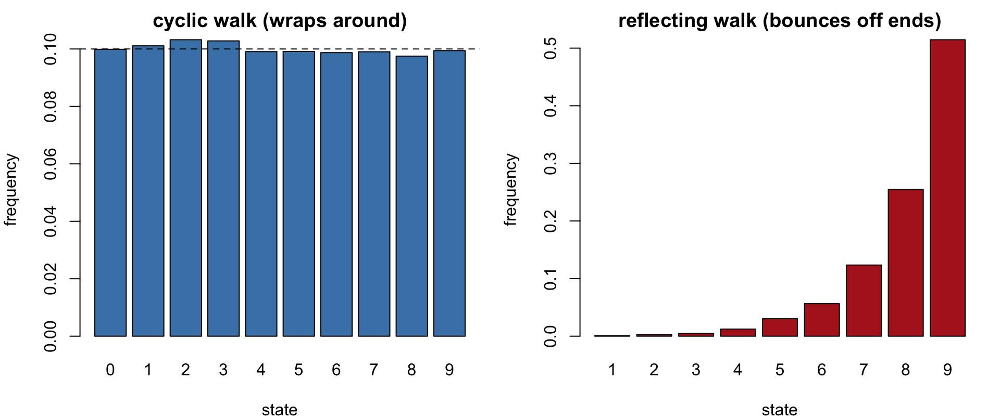
The two chains use almost the same rule and yet settle into completely different long-run behaviour, and the theory above explains why. In the cyclic walk every state has exactly the same local picture — two neighbours, reached with equal probability \(0.45\) in each direction — so no state is structurally different from any other, and the equilibrium distribution treats them all alike: uniform on \(\{0,\ldots,9\}\). The reflecting walk changes two things at once, and both matter. First, its forward and backward probabilities are themselves unequal (\(0.4\) versus \(0.2\), with \(0.4\) probability of staying put), so even on a cycle this chain would drift persistently in one direction — though a cyclic chain with that same asymmetry would still converge to uniform, because every state would still be structurally identical to every other. Second, and decisively, states \(0\) and \(9\) are no longer structurally identical to the interior states: an attempted move off either end is turned into a self-loop instead of wrapping around, so probability that would have left the segment is returned to the same state. Combined with the rightward drift, this reflecting boundary acts as a trap at state \(9\) specifically — mass drifts right, and once it arrives it accumulates there rather than passing through — which is exactly the extreme, almost-all-mass-at-\(9\) pattern in the right panel above. This is the invariance and detailed-balance machinery above made visible: a transition rule under which every state looks alike to the chain preserves the uniform distribution, and one that treats some states differently does not.
Suppose \(\theta = (\theta_1, \theta_2)\) and both full conditionals \(\pi(\theta_1 \mid \theta_2)\) and \(\pi(\theta_2 \mid \theta_1)\) can be sampled directly, even though the joint \(\pi(\theta_1, \theta_2)\) has no closed form or cannot be sampled directly. The Gibbs sampler alternates \[ \theta_1^{(t)} \sim \pi\big(\theta_1 \mid \theta_2^{(t-1)}\big), \qquad \theta_2^{(t)} \sim \pi\big(\theta_2 \mid \theta_1^{(t)}\big). \] Each half-step leaves \(\pi\) invariant: if \((\theta_1, \theta_2) \sim \pi\), then \(\theta_2 \sim \pi(\theta_2)\) (its marginal), and replacing \(\theta_1\) by a fresh draw from \(\pi(\theta_1 \mid \theta_2)\) produces a pair with joint density \(\pi(\theta_2)\,\pi(\theta_1 \mid \theta_2) = \pi(\theta_1, \theta_2)\) — exactly \(\pi\) again. Cycling through both coordinates therefore also leaves \(\pi\) invariant, and as long as the full conditionals are everywhere positive the chain is irreducible and aperiodic. No proposal, no acceptance step, no tuning: Gibbs sampling only needs full conditionals that can be sampled.
Gibbs sampling extends immediately to models with latent variables. If the target \(\pi(\theta)\) is awkward but can be written as the marginal of a joint density \(\pi(\theta, z)\) over \(\theta\) and some extra unknowns \(z\), \[ \pi(\theta) = \int \pi(\theta, z)\, dz, \] then a Gibbs sampler on \((\theta, z)\) that alternates \(z \sim \pi(z \mid \theta)\) and \(\theta \sim \pi(\theta \mid z)\) has \(\pi(\theta, z)\) as its invariant distribution, so its \(\theta\)-coordinates are draws from \(\pi(\theta)\): the \(z\)’s are simply discarded. This data augmentation pays off when the conditionals given \(z\) are standard even though \(\pi(\theta)\) itself is not. The \(z\) may be real missing data (Example 3, where exact values are hidden by censoring) or a purely mathematical device (Example 4, where a latent variance per observation turns a Cauchy likelihood into a normal one).
The running example for this half of the book is \(x_1, \ldots, x_n \mid \mu, \sigma^2 \overset{iid}{\sim} N(\mu, \sigma^2)\), with independent priors \(\mu \sim N(\mu_0, \sigma_0^2)\) and \(\sigma^2 \sim \mathrm{IG}(a_0, \lambda_0)\) (inverse-gamma: \(1/\sigma^2 \sim \mathrm{Gamma}(a_0, \lambda_0)\), so \(a_0\) is a shape and \(\lambda_0\) a rate/scale). The joint posterior is \[ \begin{aligned} P(\mu, \sigma^2 \mid x) \ \propto\ {} & e^{-(\mu-\mu_0)^2 / (2\sigma_0^2)} \cdot (\sigma^2)^{-(a_0+1)} e^{-\lambda_0/\sigma^2} \\ & \times (\sigma^2)^{-n/2} \exp\Big\{-\sum_{i=1}^n \tfrac{(x_i-\mu)^2}{2\sigma^2}\Big\}, \end{aligned} \] two-dimensional with no closed-form normalizing constant, but each conditional is standard.
The model is easiest to read as a graph (Figure 12.2). Squares are fixed hyperparameters, open circles are unknown random quantities, shaded circles are observed data, and each arrow points from a quantity to one whose distribution depends on it. The box (a plate) stands for \(n\) copies of what it contains, one for each observation. The full conditional of a node depends only on its parents, its children and its children’s other parents, which is why the conditional of \(\mu\) needs only its prior constants, the data, and \(\sigma^2\) (the other parent of the data), and likewise for \(\sigma^2\).
### draw a directed acyclic graph of a Bayesian model:
### squares = fixed hyperparameters, open circles = unknown random quantities,
### shaded circles = observed data (type "observed_square" draws observed data as a
### shaded square; type "dots" is a bare label, e.g. for an omitted stretch of a chain); arrows point from parent to child, and a
### rounded box (plate) holds the quantities repeated over i = 1, ..., n
draw_dag <- function(nodes, edges, plates = list(), main = "", r = 0.33,
xlim = range(nodes$x) + c(-0.8, 0.8), ylim = range(nodes$y) + c(-0.8, 0.8)) {
plot.new(); plot.window(xlim = xlim, ylim = ylim, asp = 1)
title(main, cex.main = 1)
for (p in plates) {
rect(p$x[1], p$y[1], p$x[2], p$y[2], border = "gray45", lwd = 1.5)
text(p$x[2] - 0.08, p$y[1] + 0.08, p$label, adj = c(1, 0), cex = 0.85, col = "gray30")
}
for (k in seq_len(nrow(edges))) {
a <- nodes[nodes$id == edges$from[k], ]; b <- nodes[nodes$id == edges$to[k], ]
d <- c(b$x - a$x, b$y - a$y); u <- d / sqrt(sum(d^2))
arrows(a$x + r * u[1], a$y + r * u[2], b$x - (r + 0.03) * u[1], b$y - (r + 0.03) * u[2],
length = 0.08, lwd = 1.4, col = if (is.null(edges$col)) "gray20" else edges$col[k])
}
th <- seq(0, 2 * pi, length.out = 100)
for (k in seq_len(nrow(nodes))) {
nd <- nodes[k, ]
if (nd$type == "dots") {
# placeholder for the omitted middle of a chain: label only
} else if (nd$type %in% c("fixed", "observed_square")) {
rect(nd$x - r * 0.85, nd$y - r * 0.85, nd$x + r * 0.85, nd$y + r * 0.85,
col = if (nd$type == "observed_square") "gray80" else "white",
border = "gray20", lwd = 1.5)
} else {
polygon(nd$x + r * cos(th), nd$y + r * sin(th), border = "gray20", lwd = 1.5,
col = if (nd$type == "observed") "gray80" else "white")
}
text(nd$x, nd$y, parse(text = nd$label), cex = 1.05)
}
}par(mar = c(0.5, 0.5, 0.5, 0.5))
nodes_norm <- data.frame(
id = c("m0", "s0", "a0", "l0", "mu", "s2", "x"),
label = c("mu[0]", "sigma[0]^2", "a[0]", "lambda[0]", "mu", "sigma^2", "x[i]"),
x = c(-1.6, -0.6, 0.6, 1.6, -1.1, 1.1, 0), y = c(2, 2, 2, 2, 1, 1, -0.2),
type = c(rep("fixed", 4), "latent", "latent", "observed"))
edges_norm <- data.frame(from = c("m0", "s0", "a0", "l0", "mu", "s2"),
to = c("mu", "mu", "s2", "s2", "x", "x"))
draw_dag(nodes_norm, edges_norm,
plates = list(list(x = c(-0.8, 0.8), y = c(-0.9, 0.5), label = "i = 1, ..., n")))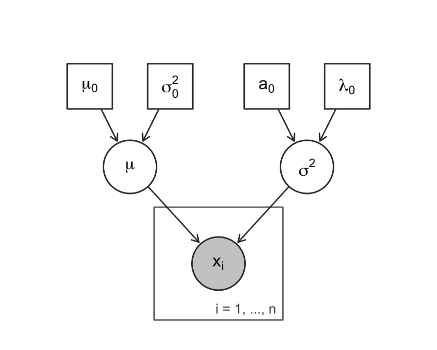
Conditional of \(\mu\). Collect the factors that involve \(\mu\) and expand \(\sum_i(x_i-\mu)^2 = n\mu^2 - 2n\mu\bar x + \sum_i x_i^2\): \[ \begin{aligned} P(\mu \mid \sigma^2, x) \ \propto\ \exp\Big\{-\tfrac12\Big[ & \big(\tfrac{1}{\sigma_0^2} + \tfrac{n}{\sigma^2}\big)\mu^2 \\ & - 2\big(\tfrac{\mu_0}{\sigma_0^2} + \tfrac{n\bar x}{\sigma^2}\big)\mu\Big]\Big\}, \end{aligned} \] which is the kernel of \(N(m, v)\) with \(1/v = 1/\sigma_0^2 + n/\sigma^2\) and \(m/v = \mu_0/\sigma_0^2 + n\bar x/\sigma^2\) — a precision-weighted average of the prior mean and the sample mean, with \(n/\sigma^2\) the weight the data contribute. As \(n \to \infty\), \(m \to \bar x\) and \(v \approx \sigma^2/n\): the prior is overwhelmed.
Conditional of \(\sigma^2\). Collect the factors involving \(\sigma^2\): \[ \begin{aligned} P(\sigma^2 \mid \mu, x) & \ \propto\ (\sigma^2)^{-(a_0+1)} e^{-\lambda_0/\sigma^2} \cdot (\sigma^2)^{-n/2} e^{-\sum_i(x_i-\mu)^2/(2\sigma^2)} \\ & \ =\ (\sigma^2)^{-\left(\frac n2 + a_0 + 1\right)} \exp\Big\{-\tfrac{\lambda_0 + \frac12\sum_i(x_i-\mu)^2}{\sigma^2}\Big\}, \end{aligned} \] again an inverse-gamma kernel, \(\sigma^2 \mid \mu, x \sim \mathrm{IG}\big(\tfrac n2 + a_0,\ \tfrac12\sum_i(x_i-\mu)^2 + \lambda_0\big)\): the prior contributes \(a_0\) “pseudo-observations” worth of shape and \(\lambda_0\) worth of sum-of-squares, and the data add \(n\) and \(\sum_i(x_i-\mu)^2\) to each.
In the code, sigma0 is the prior variance \(\sigma_0^2\), and the prior \(\mathrm{IG}(a_0, \lambda_0)\) is written as \(a_0 = \alpha/2\), \(\lambda_0 = \alpha w/2\) (arguments alpha and w).
gibbs_norm <- function(iters, x, mu0, sigma0, alpha, w, mu_init = 0, s2_init = 1) {
n <- length(x); sumx <- sum(x)
out <- matrix(NA_real_, iters, 2, dimnames = list(NULL, c("mu", "s2")))
mu <- mu_init; s2 <- s2_init
for (t in seq_len(iters)) {
v <- 1 / (n / s2 + 1 / sigma0)
mu <- rnorm(1, (sumx / s2 + mu0 / sigma0) * v, sqrt(v))
s2 <- 1 / rgamma(1, (alpha + n) / 2, (alpha * w + sum((x - mu)^2)) / 2)
out[t, ] <- c(mu, s2)
}
out
}A preallocated matrix filled by a plain for loop replaces the original replicate()-with-<<- pattern: it does the same work with one direct assignment per iteration instead of a closure mutating variables in its enclosing scope, and it makes the recurrence — each row built from the previous one — visually explicit.
set.seed(2)
x <- rnorm(50, 10, 2)
draws_gibbs <- gibbs_norm(10000, x, mu0 = 0, sigma0 = 1e10, alpha = 1e-5, w = 1e-5)
burn <- 1:200
mu_g <- draws_gibbs[-burn, "mu"]
sd_g <- sqrt(draws_gibbs[-burn, "s2"])
par(mfrow = c(2, 2), mar = c(4, 4, 2, 1))
plot(mu_g, type = "l", col = "steelblue", xlab = "iteration", ylab = expression(mu), main = "trace of mu")
plot(density(mu_g), col = "steelblue", lwd = 2, main = "posterior density of mu", xlab = expression(mu))
plot(sd_g, type = "l", col = "firebrick", xlab = "iteration", ylab = expression(sigma), main = "trace of sigma")
plot(density(sd_g), col = "firebrick", lwd = 2, main = "posterior density of sigma", xlab = expression(sigma))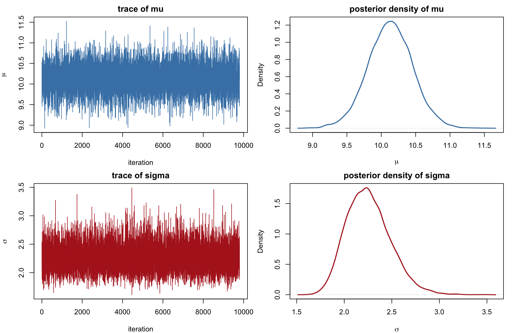
gibbs_summary <- data.frame(
parameter = c("mu", "sigma"),
mean = c(mean(mu_g), mean(sd_g)),
sd = c(sd(mu_g), sd(sd_g)),
q025 = c(quantile(mu_g, 0.025), quantile(sd_g, 0.025)),
q975 = c(quantile(mu_g, 0.975), quantile(sd_g, 0.975))
)
knitr::kable(gibbs_summary, digits = 3,
col.names = c("parameter", "mean", "sd", "2.5%", "97.5%"),
align = c("l", "r", "r", "r", "r"))| parameter | mean | sd | 2.5% | 97.5% |
|---|---|---|---|---|
| mu | 10.141 | 0.330 | 9.489 | 10.791 |
| sigma | 2.293 | 0.239 | 1.885 | 2.809 |
The problem. The quantities of interest are \(x_1, \ldots, x_n \mid \mu, \sigma^2 \overset{iid}{\sim} N(\mu, \sigma^2)\), with the priors of Example 2, but not every \(x_i\) is seen exactly. For each unit we observe a pair \((I_i, \delta_i)\):
The observed data are the \((I_i, \delta_i)\), and the censored \(x_i\) are unknown. The indicators \(\delta_i\) are independent of the \(x_i\) and of \((\mu, \sigma^2)\), so they carry no information about the parameters, and the likelihood is \[ \begin{aligned} L(\mu, \sigma^2) = {} & \prod_{i:\,\delta_i = 1} \frac{1}{\sigma}\,\varphi\Big(\frac{x_i - \mu}{\sigma}\Big) \\ & \times \prod_{i:\,\delta_i = 0} \Big[\Phi\Big(\frac{b_i - \mu}{\sigma}\Big) - \Phi\Big(\frac{a_i - \mu}{\sigma}\Big)\Big], \end{aligned} \] where \(\varphi\) and \(\Phi\) are the standard normal density and CDF. The products of \(\Phi\) differences make the posterior non-standard: neither conditional of \(\mu\) or \(\sigma^2\) is a normal or inverse-gamma distribution.
Data augmentation. Treat the unobserved \(x_i\) as extra unknowns. Given all \(x_i\), the data are complete and the conditionals of \(\mu\) and \(\sigma^2\) are exactly those of Example 2. Given \((\mu, \sigma^2)\) and the observed \((I_i, \delta_i)\), a censored \(x_i\) has density proportional to the \(N(\mu, \sigma^2)\) density times the indicator that \(x_i \in I_i\): \[ x_i \mid \mu, \sigma^2, I_i, \delta_i = 0 \ \sim\ N(\mu, \sigma^2) \text{ truncated to } [a_i, b_i), \] while an uncensored \(x_i\) is fixed at its observed value. One Gibbs iteration is \[ \begin{aligned} x_i^{(t)} & \sim P\big(x_i \mid \mu^{(t-1)}, \sigma^{2(t-1)}, I_i, \delta_i\big) \quad (\text{censored } i), \\ \mu^{(t)} & \sim P\big(\mu \mid x^{(t)}, \sigma^{2(t-1)}\big), \qquad \sigma^{2(t)} \sim P\big(\sigma^2 \mid x^{(t)}, \mu^{(t)}\big). \end{aligned} \] Integrating the latent \(x_i\) out of the augmented model gives back exactly the likelihood above, since \(\int_{a_i}^{b_i} \sigma^{-1}\varphi((x - \mu)/\sigma)\,dx\) is the bracketed \(\Phi\) difference.
In the graph of the model (Figure 12.4), \(x_i\) is an unknown circle below the parameters, and the observed interval \(I_i\) and indicator \(\delta_i\) are shaded squares. \(I_i\) contains \(x_i\) (and equals it when \(\delta_i = 1\)), so \(x_i\) is its parent. The indicator \(\delta_i\) is independent of \(x_i\) and of the parameters (whether a unit is observed exactly does not depend on its value), so it has no arrows: it carries no information about \((\mu, \sigma^2)\).
par(mar = c(0.5, 0.5, 0.5, 0.5))
nodes_cens <- rbind(nodes_norm[1:6, ], data.frame(
id = c("x", "d", "I"), label = c("x[i]", "delta[i]", "I[i]"),
x = c(0, 1.3, 0), y = c(-0.2, -1.4, -1.4),
type = c("latent", "observed_square", "observed_square")))
edges_cens <- rbind(edges_norm, data.frame(from = "x", to = "I"))
draw_dag(nodes_cens, edges_cens,
plates = list(list(x = c(-0.8, 2.0), y = c(-2.1, 0.5), label = "i = 1, ..., n")))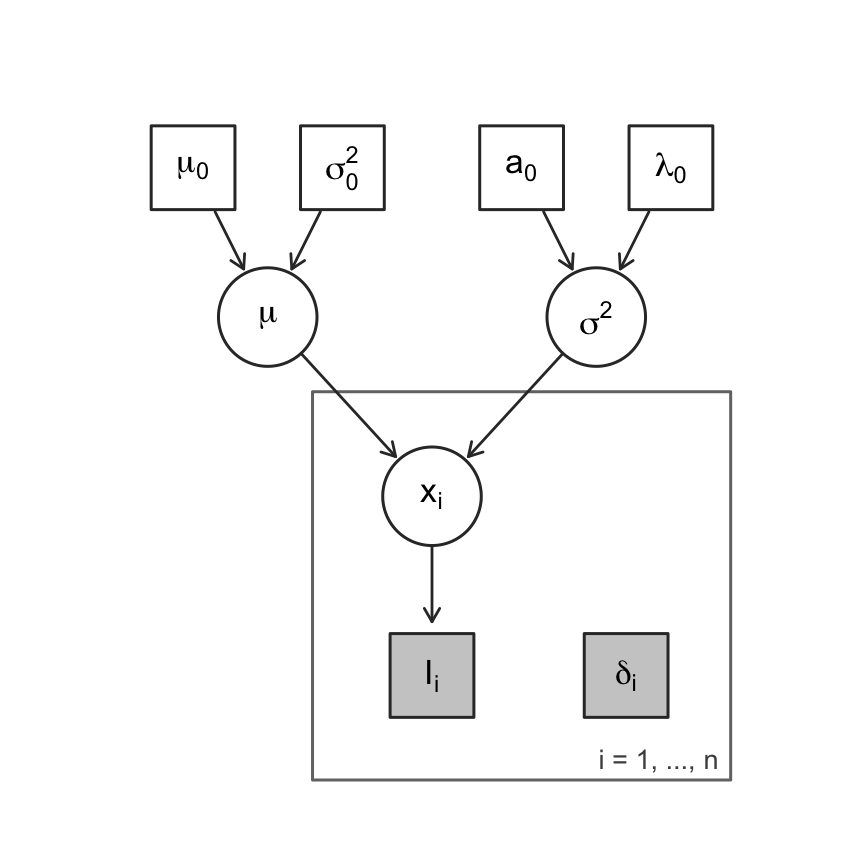
The sampler below stores each interval as its endpoints a, b, with a = b = x for an uncensored unit. The censored \(x_i\) are drawn from their truncated normals with truncnorm::rtruncnorm, which also handles \(b_i = \infty\):
gibbs_norm_censored <- function(iters, a, b, delta, mu0, sigma0, alpha, w) {
n <- length(a); cens <- delta == 0
x <- ifelse(cens, pmin(a + 1, b), a) # start: exact values, or a point in the interval
mu <- mean(x); s2 <- var(x)
out <- matrix(NA_real_, iters, 2)
for (t in seq_len(iters)) {
### censored units: x_i | mu, sigma^2 ~ N(mu, sigma^2) truncated to [a_i, b_i)
x[cens] <- rtruncnorm(sum(cens), a = a[cens], b = b[cens], mean = mu, sd = sqrt(s2))
### complete-data conditionals of Example 2
v <- 1 / (n / s2 + 1 / sigma0)
mu <- rnorm(1, (sum(x) / s2 + mu0 / sigma0) * v, sqrt(v))
s2 <- 1 / rgamma(1, (alpha + n) / 2, (alpha * w + sum((x - mu)^2)) / 2)
out[t, ] <- c(mu, s2)
}
list(mu = out[, 1], sd = sqrt(out[, 2]))
}To test it, simulate \(n = 200\) values from \(N(100, 40^2)\). Each is observed exactly with probability \(0.3\). Otherwise it is censored: values above \(150\) are only known to be at least \(150\) (right censoring, \(I_i = [150, \infty)\)), and the rest are only known to the decade, \(I_i = [10k, 10k + 10)\).
set.seed(3)
n_c <- 200
x_true <- rnorm(n_c, 100, 40)
delta <- rbinom(n_c, 1, 0.3)
a_obs <- ifelse(delta == 1, x_true, ifelse(x_true >= 150, 150, floor(x_true / 10) * 10))
b_obs <- ifelse(delta == 1, x_true, ifelse(x_true >= 150, Inf, a_obs + 10))
fit_cens <- gibbs_norm_censored(5000, a_obs, b_obs, delta, mu0 = 0, sigma0 = 1e10,
alpha = 1e-5, w = 1e-5)
burn2 <- 1:200
knitr::kable(data.frame(
quantity = c("exact / interval / right-censored", "mu", "sigma"),
truth = c(sprintf("%d / %d / %d", sum(delta == 1), sum(delta == 0 & is.finite(b_obs)),
sum(is.infinite(b_obs))), "100", "40"),
naive = c("", sprintf("%.2f", mean(a_obs)), sprintf("%.2f", sd(a_obs))),
posterior = c("", sprintf("%.2f (%.2f, %.2f)", mean(fit_cens$mu[-burn2]),
quantile(fit_cens$mu[-burn2], 0.025), quantile(fit_cens$mu[-burn2], 0.975)),
sprintf("%.2f (%.2f, %.2f)", mean(fit_cens$sd[-burn2]),
quantile(fit_cens$sd[-burn2], 0.025), quantile(fit_cens$sd[-burn2], 0.975)))
), col.names = c("", "truth", "naive", "posterior mean (95% interval)"), align = c("l", "r", "r", "r"))| truth | naive | posterior mean (95% interval) | |
|---|---|---|---|
| exact / interval / right-censored | 70 / 121 / 9 | ||
| mu | 100 | 96.88 | 100.74 (95.27, 106.17) |
| sigma | 40 | 38.00 | 39.19 (35.50, 43.46) |
Censoring removes a great deal of information: most units only say which decade \(x_i\) fell in, and the largest values are only known to exceed \(150\). Treating each censored value as the lower end of its interval biases both estimates downward, and the naive estimates come with no honest measure of their uncertainty. The augmented Gibbs sampler still recovers \(\mu\) and \(\sigma\), because it imputes each censored \(x_i\) from its conditional distribution given the current parameters and so propagates the uncertainty about where in \(I_i\) it lies.
The problem. Observations \(y_1, \ldots, y_n\) are modelled as \(\text{Cauchy}(\mu, \sigma)\), a heavy-tailed model that is robust to outliers: \[ p(y_i \mid \mu, \sigma) = \frac{1}{\pi\sigma\,\big(1 + r_i^2\big)}, \qquad r_i = \frac{y_i - \mu}{\sigma}. \] The priors are \(\mu \sim N(\mu_0, \tau^2)\) and \(\sigma^2 \sim \mathrm{IG}(a_0, b_0)\), with density \(p(\sigma^2) \propto (\sigma^2)^{-(a_0+1)}e^{-b_0/\sigma^2}\). The posterior of \((\mu, \sigma^2)\) is proportional to \(e^{-(\mu-\mu_0)^2/(2\tau^2)}\,(\sigma^2)^{-(a_0+1)}e^{-b_0/\sigma^2}\prod_i \sigma^{-1}(1 + r_i^2)^{-1}\). Neither conditional is a standard distribution, because of the factors \((1 + r_i^2)^{-1}\). Data augmentation fixes this.
Introduce a latent variance \(v_i\) for each observation, with \[ \begin{aligned} & y_i \mid \mu, \sigma^2, v_i \sim N(\mu, \sigma^2 v_i), \qquad v_i \sim \mathrm{IG}\big(\tfrac12, \tfrac12\big), \\ & p(v_i) = \frac{(1/2)^{1/2}}{\Gamma(1/2)}\, v_i^{-3/2} e^{-1/(2v_i)} = \frac{1}{\sqrt{2\pi}}\, v_i^{-3/2} e^{-1/(2v_i)}. \end{aligned} \] Integrating out \(v_i\) gives back the Cauchy density: \[ \begin{aligned} & \int_0^\infty p(y_i \mid \mu, \sigma^2, v_i)\, p(v_i)\, dv_i \\ &\quad = \int_0^\infty \frac{1}{\sqrt{2\pi\sigma^2 v_i}}\, e^{-r_i^2/(2v_i)} \cdot \frac{1}{\sqrt{2\pi}}\, v_i^{-3/2} e^{-1/(2v_i)}\, dv_i \\ &\quad = \frac{1}{2\pi\sigma} \int_0^\infty v_i^{-2} \exp\Big\{-\frac{1 + r_i^2}{2v_i}\Big\}\, dv_i \\ &\quad = \frac{1}{2\pi\sigma}\cdot\frac{2}{1 + r_i^2} = \frac{1}{\pi\sigma(1 + r_i^2)}, \end{aligned} \] using \(\int_0^\infty v^{-2}e^{-c/v}\,dv = 1/c\) (substitute \(u = 1/v\)). So the augmented model has exactly the original posterior as its \((\mu, \sigma^2)\) marginal, and a Gibbs sampler on \((v, \mu, \sigma^2)\) samples the Cauchy posterior once the \(v_i\) are ignored.
Figure 12.5 shows this augmented model. Compared with Figure 12.2, each observation has its own latent variance \(v_i\), a child of the fixed constants \(\tfrac12, \tfrac12\) of its \(\mathrm{IG}\) prior and a parent of \(y_i\). Since \(v_i\) has only one child, its full conditional involves only \(y_i\), \(\mu\) and \(\sigma^2\), as Step 3 below confirms.
par(mar = c(0.5, 0.5, 0.5, 0.5))
nodes_cauchy <- data.frame(
id = c("m0", "t2", "a0", "b0", "mu", "s2", "half", "v", "y"),
label = c("mu[0]", "tau^2", "a[0]", "b[0]", "mu", "sigma^2", "frac(1, 2)", "v[i]", "y[i]"),
x = c(-1.6, -0.6, 0.6, 1.6, -1.1, 1.1, -2.4, -1.3, 0),
y = c(2, 2, 2, 2, 1, 1, -0.2, -0.2, -1.2),
type = c(rep("fixed", 4), "latent", "latent", "fixed", "latent", "observed"))
edges_cauchy <- data.frame(from = c("m0", "t2", "a0", "b0", "half", "mu", "s2", "v"),
to = c("mu", "mu", "s2", "s2", "v", "y", "y", "y"))
draw_dag(nodes_cauchy, edges_cauchy,
plates = list(list(x = c(-1.9, 0.6), y = c(-1.9, 0.4), label = "i = 1, ..., n")))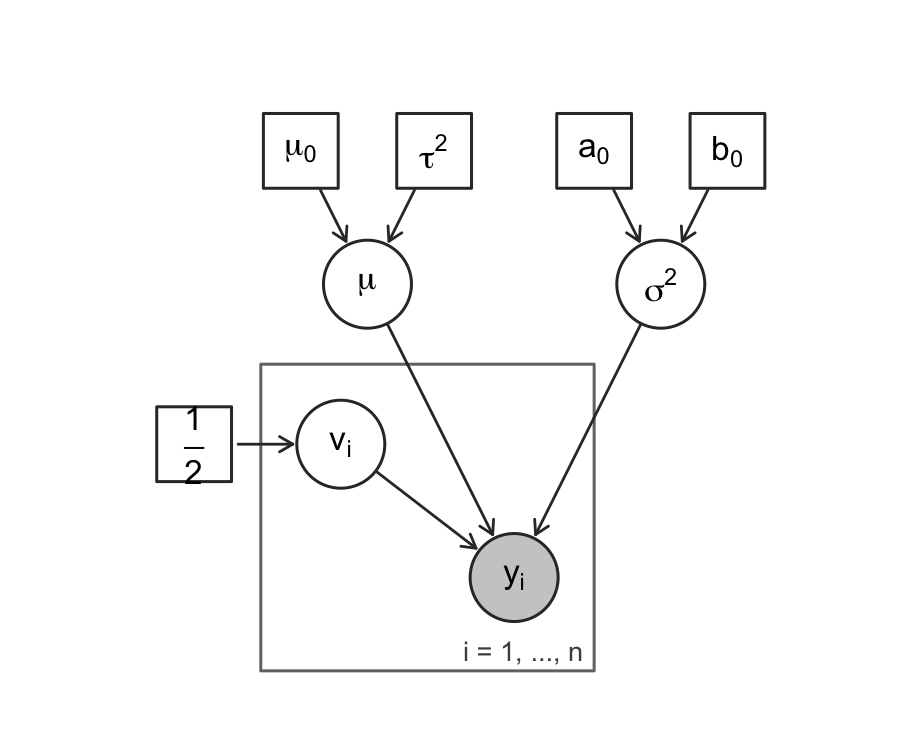
Multiplying priors, the latent-variable densities and the normal likelihood, \[ \begin{aligned} p(\mu, \sigma^2, v \mid y) \propto {} & e^{-\frac{(\mu-\mu_0)^2}{2\tau^2}} \,(\sigma^2)^{-(a_0+1)} e^{-b_0/\sigma^2} \\ & \times \prod_{i=1}^n \Big[ (\sigma^2 v_i)^{-1/2} \exp\Big\{-\frac{(y_i-\mu)^2}{2\sigma^2 v_i}\Big\} \cdot v_i^{-3/2} e^{-1/(2v_i)} \Big]. \end{aligned} \] Each full conditional is read off by keeping only the factors that contain the parameter being updated and recognizing the kernel.
The factors containing \(v_i\) are those in the \(i\)-th term of the product: \[ \begin{aligned} p(v_i \mid \mu, \sigma^2, y) & \propto v_i^{-1/2}\, v_i^{-3/2} \exp\Big\{-\frac{1}{v_i}\Big(\frac{(y_i-\mu)^2}{2\sigma^2} + \frac12\Big)\Big\} \\ & = v_i^{-(1+1)} \exp\Big\{-\frac{(1 + r_i^2)/2}{v_i}\Big\}. \end{aligned} \] This is the \(\mathrm{IG}(a, b)\) kernel \(v^{-(a+1)}e^{-b/v}\) with \(a = 1\) and \(b = (1 + r_i^2)/2\): \[ v_i \mid \mu, \sigma^2, y \sim \mathrm{IG}\Big(1,\ \frac{1 + r_i^2}{2}\Big), \qquad i = 1, \ldots, n, \] independently across \(i\), since \(v_i\) appears in no other factor. The scale \((1 + r_i^2)/2\) grows with the standardized residual \(r_i\), so an outlier gets a large latent variance.
The factors containing \(\mu\) are the prior and the exponentials of the likelihood. Writing \(w_i = 1/(\sigma^2 v_i)\) for the precision of observation \(i\), \[ \begin{aligned} p(\mu \mid \sigma^2, v, y) & \propto \exp\Big\{-\frac{(\mu-\mu_0)^2}{2\tau^2} - \sum_i \frac{w_i (y_i-\mu)^2}{2}\Big\} \\ & \propto \exp\Big\{-\frac12\Big[\Big(\frac{1}{\tau^2} + \sum_i w_i\Big)\mu^2 - 2\Big(\frac{\mu_0}{\tau^2} + \sum_i w_i y_i\Big)\mu\Big]\Big\}, \end{aligned} \] after expanding the squares and dropping terms free of \(\mu\). Completing the square gives a normal distribution: \[ \begin{aligned} & \mu \mid \sigma^2, v, y \sim N\big(m, s^2\big), \\ & \frac{1}{s^2} = \frac{1}{\tau^2} + \sum_{i=1}^n w_i, \qquad m = s^2\Big(\frac{\mu_0}{\tau^2} + \sum_{i=1}^n w_i y_i\Big). \end{aligned} \] This is a precision-weighted mean of the prior mean and the observations, as in Example 2, except that each observation now has its own weight \(w_i\). An outlier, with a large \(v_i\), has a small weight and barely moves \(\mu\); this is where the robustness of the Cauchy model comes from.
The factors containing \(\sigma^2\) are its prior and the likelihood terms \((\sigma^2)^{-1/2}\) and \(\exp\{-(y_i-\mu)^2/(2\sigma^2 v_i)\}\): \[ \begin{aligned} p(\sigma^2 \mid \mu, v, y) & \propto (\sigma^2)^{-(a_0+1)} e^{-b_0/\sigma^2} \cdot (\sigma^2)^{-n/2} \exp\Big\{-\frac{1}{\sigma^2}\sum_i \frac{(y_i-\mu)^2}{2v_i}\Big\} \\ & = (\sigma^2)^{-(a_0 + \frac n2 + 1)} \exp\Big\{-\frac{b_0 + \sum_i (y_i-\mu)^2/(2v_i)}{\sigma^2}\Big\}, \end{aligned} \] again an inverse-gamma kernel: \[ \sigma^2 \mid \mu, v, y \sim \mathrm{IG}\Big(a_0 + \frac n2,\ b_0 + \sum_{i=1}^n \frac{(y_i-\mu)^2}{2v_i}\Big). \]
One Gibbs iteration draws all \(v_i\) (Step 3), then \(\mu\) (Step 4), then \(\sigma^2\) (Step 5), each from its full conditional at the current values of the others. We use \(\mu_0 = 0\), \(\tau = 10\) and \(a_0 = b_0 = 1\), and 30 observations from \(\text{Cauchy}(2, 1)\), which include several outliers (the largest is above 35). Because the posterior of \((\mu, \sigma)\) is only two-dimensional, it can also be computed exactly on a grid, which gives an independent check of the sampler. On the \(\sigma\) scale the prior density is \(p(\sigma^2)\cdot 2\sigma\), by the change of variable \(\sigma^2 \to \sigma\).
gibbs_cauchy <- function(iters, y, mu0 = 0, tau = 10, a0 = 1, b0 = 1, mu = 0, s2 = 1) {
n <- length(y)
out <- matrix(NA_real_, iters, 2, dimnames = list(NULL, c("mu", "sigma")))
for (t in seq_len(iters)) {
### Step 3: v_i | mu, sigma^2 ~ IG(1, (1 + r_i^2) / 2), drawn as 1 / Gamma
v <- 1 / rgamma(n, shape = 1, rate = (1 + (y - mu)^2 / s2) / 2)
### Step 4: mu | sigma^2, v ~ N(m, s^2), with observation weights w_i = 1 / (sigma^2 v_i)
w <- 1 / (s2 * v)
prec <- 1 / tau^2 + sum(w)
mu <- rnorm(1, (mu0 / tau^2 + sum(w * y)) / prec, sqrt(1 / prec))
### Step 5: sigma^2 | mu, v ~ IG(a0 + n / 2, b0 + sum (y_i - mu)^2 / (2 v_i))
s2 <- 1 / rgamma(1, shape = a0 + n / 2, rate = b0 + sum((y - mu)^2 / (2 * v)))
out[t, ] <- c(mu, sqrt(s2))
}
out
}
### exact log posterior of (mu, sigma), up to a constant, for the grid check
log_post_cauchy <- function(mu, sigma, y, mu0 = 0, tau = 10, a0 = 1, b0 = 1) {
sum(dcauchy(y, mu, sigma, log = TRUE)) + dnorm(mu, mu0, tau, log = TRUE) -
(a0 + 1) * log(sigma^2) - b0 / sigma^2 + log(2 * sigma)
}
set.seed(7)
y_cauchy <- rcauchy(30, location = 2, scale = 1)
draws_cauchy <- gibbs_cauchy(20000, y_cauchy, mu = -5, s2 = 25) # deliberately poor start
keep_c <- -(1:1000)
mu_grid <- seq(0, 4, length.out = 300); sg_grid <- seq(0.2, 3.5, length.out = 300)
lp <- outer(mu_grid, sg_grid, Vectorize(function(m, s) log_post_cauchy(m, s, y_cauchy)))
post <- exp(lp - max(lp)); post <- post / sum(post)par(mfrow = c(1, 3), mar = c(4, 4, 2, 1))
contour(mu_grid, sg_grid, post, nlevels = 8, drawlabels = FALSE, col = "gray55",
xlim = c(-5.5, 4), ylim = c(0, 5.5), xlab = expression(mu), ylab = expression(sigma),
main = "first 15 iterations")
path <- rbind(c(-5, 5), draws_cauchy[1:15, ])
for (t in 1:15) { # mu moves first (horizontal leg), then sigma (vertical leg)
segments(path[t, 1], path[t, 2], path[t + 1, 1], path[t, 2], col = "darkorange", lwd = 1.5)
segments(path[t + 1, 1], path[t, 2], path[t + 1, 1], path[t + 1, 2], col = "steelblue", lwd = 1.5)
}
points(-5, 5, pch = 17, cex = 1.4)
plot(draws_cauchy[1:500, "mu"], type = "l", col = "darkorange", xlab = "iteration",
ylab = expression(mu), main = "trace of mu")
plot(draws_cauchy[1:500, "sigma"], type = "l", col = "steelblue", xlab = "iteration",
ylab = expression(sigma), main = "trace of sigma")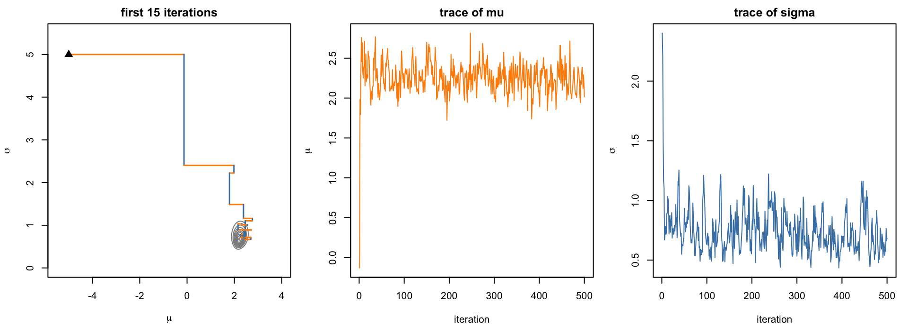
grid_mean <- function(g, margin) sum(apply(post, margin, sum) * g)
grid_sd <- function(g, margin) sqrt(sum(apply(post, margin, sum) * g^2) - grid_mean(g, margin)^2)
knitr::kable(data.frame(
quantity = c("posterior mean of mu", "posterior sd of mu",
"posterior mean of sigma", "posterior sd of sigma"),
gibbs = c(mean(draws_cauchy[keep_c, "mu"]), sd(draws_cauchy[keep_c, "mu"]),
mean(draws_cauchy[keep_c, "sigma"]), sd(draws_cauchy[keep_c, "sigma"])),
exact = c(grid_mean(mu_grid, 1), grid_sd(mu_grid, 1),
grid_mean(sg_grid, 2), grid_sd(sg_grid, 2))
), digits = 3, col.names = c("quantity", "Gibbs", "exact (grid)"), align = c("l", "r", "r"))| quantity | Gibbs | exact (grid) |
|---|---|---|
| posterior mean of mu | 2.228 | 2.228 |
| posterior sd of mu | 0.179 | 0.179 |
| posterior mean of sigma | 0.768 | 0.765 |
| posterior sd of sigma | 0.181 | 0.178 |
The Gibbs estimates agree with the exact posterior to Monte Carlo error. For comparison, the sample mean of these data is 3.68 and the sample standard deviation is 6.43, both dragged far off by the outliers, while the posterior mean of \(\mu\) stays near the centre of the bulk of the data. A shinylive app runs this sampler one conditional update at a time: it shows the \(v\), \(\mu\) and \(\sigma\) updates as separate steps on the exact posterior, and the latent variances \(v_i\) of the outliers.
Gibbs sampling needs full conditionals that are both known and directly sample-able — a strong requirement outside conjugate models. Metropolis–Hastings (MH) needs only a target \(\pi(\theta)\) computable up to a constant and any proposal distribution \(\tilde T(\theta^* \mid \theta)\) we can sample from. Starting from \(\theta^{(0)}\), repeat:
Only the ratio \(\pi(\theta^*)/\pi(\theta^{(t-1)})\) is needed, so any normalizing constant of \(\pi\) cancels — exactly as in rejection sampling, but here a rejected proposal still contributes a draw (the repeated current value) rather than being discarded, which is what lets MH work even when \(\pi\) has no available envelope. One can show (by checking detailed balance directly, splitting into the “propose and accept” and “reject and stay” cases and using the \(\min\{\cdot,\cdot\}\) identity \(\min\{a,b\} = \min\{b,a\}\)) that this \(T\) leaves \(\pi\) invariant regardless of what \(\tilde T\) is, as long as its support is compatible with \(\pi\)’s.
If \(\tilde T\) is symmetric, \(\tilde T(\theta^* \mid \theta) = \tilde T(\theta \mid \theta^*)\) — e.g. \(\theta^* \sim N(\theta^{(t-1)}, \varsigma^2)\) — the proposal terms cancel and \(r = \min\{\pi(\theta^*)/\pi(\theta^{(t-1)}), 1\}\): uphill proposals are always accepted, downhill ones accepted in proportion to how much worse they are. \(\varsigma\), the step size, is the only tuning parameter.
met_gauss <- function(iters, log_f, stepsizes, ini_value, ...) {
state <- ini_value; no_var <- length(state)
logf <- log_f(ini_value, ...)
if (!is.finite(logf)) stop("Initial value has zero probability")
out <- matrix(NA_real_, iters, no_var); n_acc <- 0
for (t in seq_len(iters)) {
proposal <- rnorm(no_var, state, stepsizes)
new_logf <- log_f(proposal, ...)
if (log(runif(1)) < new_logf - logf) {
state <- proposal; logf <- new_logf; n_acc <- n_acc + 1
}
out[t, ] <- state
}
attr(out, "accept_rate") <- n_acc / iters
out
}An indicator-shaped target needs no special handling. To sample a normal truncated to \([l, u]\), target \(\pi(\theta) \propto \varphi(\theta)\,I(l \le \theta \le u)\), then any proposal landing outside \([l,u]\) has \(\pi(\theta^*) = 0\), hence \(r = 0\), and is automatically rejected.
log_tnorm <- function(x, mu, sigma, lb, ub) {
if (x > lb && x < ub) dnorm(x, mu, sigma, log = TRUE) else -Inf
}
par(mfrow = c(1, 3), mar = c(4, 4, 2, 1))
for (step in c(0.1, 1, 2)) {
mc <- met_gauss(5000, log_tnorm, stepsizes = step, ini_value = 4.5, mu = 0, sigma = 2, lb = 4, ub = 5)
plot(mc, type = "l", col = "steelblue", xlab = "iteration", ylab = expression(theta),
main = sprintf("step = %.1f, accept = %.2f", step, attr(mc, "accept_rate")))
}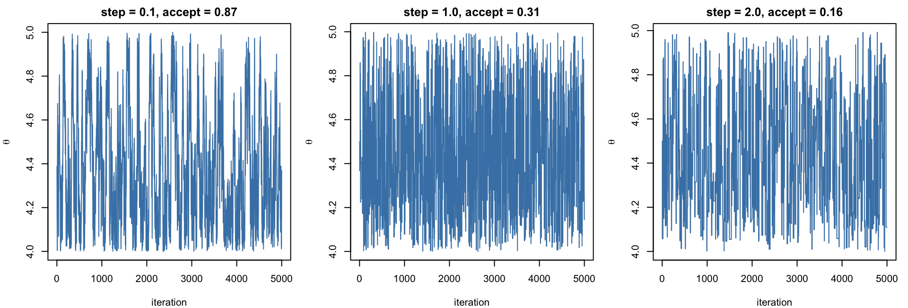
The chain’s draws are dependent, and what determines the precision of an ergodic average is not the acceptance rate itself but the resulting autocorrelation: for a stationary chain with lag-\(k\) autocorrelation \(\rho_k\), \[ \begin{aligned} \mathrm{Var}\Big(\tfrac1T\sum_{t=1}^T \theta^{(t)}\Big) & \approx \frac{\sigma^2}{T}\Big(1 + 2\sum_{k \ge 1} \rho_k\Big) \\ & = \frac{\sigma^2}{T_\text{eff}}, \end{aligned} \] so the tuning goal is small autocorrelation, not a high acceptance rate as such. A step too small is accepted almost every time but crawls (highly autocorrelated); a step too large is almost always rejected, so the chain barely moves either. Both extremes waste the same \(T\) iterations on far fewer effective ones — the figure below (three step sizes on a \(N(0,1)\) target) makes this visible directly in the trace and the ACF.
mh_std_normal <- function(sig, n = 2000) {
th <- numeric(n); th[1] <- 0; acc <- 0
for (t in 2:n) {
p <- th[t - 1] + rnorm(1, 0, sig)
if (runif(1) < dnorm(p) / dnorm(th[t - 1])) { th[t] <- p; acc <- acc + 1 } else th[t] <- th[t - 1]
}
list(th = th, acc = acc / (n - 1))
}
res <- lapply(c(0.1, 2.4, 40), mh_std_normal)
labs <- c("too small", "about right", "too large")
par(mfrow = c(2, 3), mar = c(4, 4, 2, 1))
for (k in 1:3) plot(res[[k]]$th[1:500], type = "l", col = "steelblue", xlab = "t", ylab = expression(theta^(t)),
ylim = c(-3.5, 3.5), main = sprintf("%s: accept %.2f", labs[k], res[[k]]$acc))
for (k in 1:3) acf(res[[k]]$th, lag.max = 50, main = "ACF")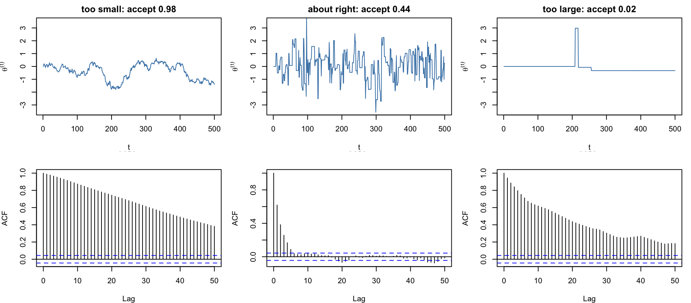
For random-walk Metropolis on a smooth target, theory recommends an acceptance rate near \(0.234\) in high dimension (up to about \(0.44\) in one dimension) as the rate that minimizes autocorrelation for a given computational budget — a useful rule of thumb, not a target to hit exactly.
The two ideas combine directly. If \(\theta = (\theta_1, \theta_2)\) and \(\pi(\theta_1 \mid \theta_2)\) has no convenient sampler while \(\pi(\theta_2 \mid \theta_1)\) does, replace only the first Gibbs step by a Metropolis–Hastings update that targets \(\pi(\theta_1 \mid \theta_2)\) (evaluated at the current \(\theta_2\)) and leave the second step as an exact conditional draw. Each block transition leaves \(\pi\) invariant on its own — the Gibbs argument applies verbatim to any \(\pi(\theta_j \mid \theta_{-j})\)-invariant transition, not only an exact conditional draw — so the composite sweep leaves the full joint \(\pi\) invariant. This “Gibbs where conjugate, Metropolis elsewhere” pattern, iterated one parameter or block at a time, is how most general-purpose Bayesian software before Hamiltonian methods actually worked.
This is the model and data of Example 2, now sampled by random-walk Metropolis–Hastings.
\(\sigma^2 > 0\) makes a symmetric normal random walk directly on \(\sigma^2\) wasteful (many proposals land below zero), so reparametrize \(w = \log \sigma^2\), which ranges over all of \(\mathbb R\). By the change-of-variables formula, the posterior in \((\mu, w)\) picks up a Jacobian factor \(e^w\) relative to the posterior in \((\mu, \sigma^2)\); omitting it targets the wrong distribution.
log_post_mu_w <- function(mu, w, x, mu0, sigma0, alpha, wprior) {
s2 <- exp(w)
sum(dnorm(x, mu, sqrt(s2), log = TRUE)) + dnorm(mu, mu0, sqrt(sigma0), log = TRUE) +
(-(alpha / 2 + 1) * log(s2) - alpha * wprior / (2 * s2)) + w # "+ w" is the log Jacobian
}
mh_norm <- function(iters, stepsizes, x, mu0, sigma0, alpha, w) {
log_f <- function(state) log_post_mu_w(state[1], state[2], x, mu0, sigma0, alpha, w)
mc <- met_gauss(iters, function(state) log_f(state), stepsizes, ini_value = c(0, 0))
list(mu = mc[, 1], sd = exp(0.5 * mc[, 2]), accept_rate = attr(mc, "accept_rate"))
}scales <- c(20, 10, 4, 2)
fits <- lapply(scales, function(s) mh_norm(10000, c(s, s) / sqrt(length(x)), x, 0, 1e10, 1e-5, 1e-5))
par(mfcol = c(2, 4), mar = c(4, 4, 2, 1))
for (k in seq_along(fits)) {
plot(fits[[k]]$mu[1:1000], type = "l", col = "steelblue", xlab = "t", ylab = expression(mu),
main = sprintf("scale %g, accept %.2f", scales[k], fits[[k]]$accept_rate))
acf(fits[[k]]$mu[-(1:500)], main = "ACF")
}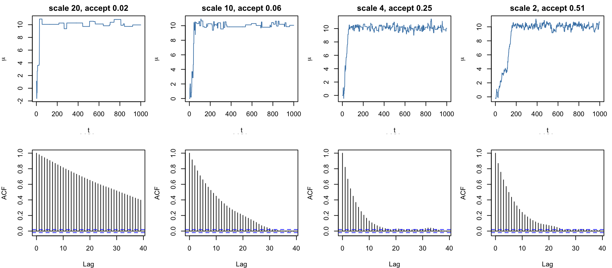
Scale \(4\) gives the least autocorrelated trace among the four, consistent with an acceptance rate closer to the \(0.2\)–\(0.4\) range than the very low or very high rates at the extremes. Running a long chain at that scale and comparing to the Gibbs sampler on the same data:
mh_long <- mh_norm(50000, c(4, 4) / sqrt(length(x)), x, 0, 1e10, 1e-5, 1e-5)
keep_mh <- -(1:1000)
coherence <- data.frame(
method = c("Metropolis-Hastings", "Gibbs"),
mean_mu = c(mean(mh_long$mu[keep_mh]), mean(mu_g)),
sd_mu = c(sd(mh_long$mu[keep_mh]), sd(mu_g)),
mean_sigma = c(mean(mh_long$sd[keep_mh]), mean(sd_g)),
sd_sigma = c(sd(mh_long$sd[keep_mh]), sd(sd_g))
)
knitr::kable(coherence, digits = 3, align = c("l", "r", "r", "r", "r"))| method | mean_mu | sd_mu | mean_sigma | sd_sigma |
|---|---|---|---|---|
| Metropolis-Hastings | 10.141 | 0.325 | 2.298 | 0.236 |
| Gibbs | 10.141 | 0.330 | 2.293 | 0.239 |
A random-walk proposal has no sense of direction: reaching a point one posterior standard deviation away takes \(O(d)\) steps in \(d\) dimensions, and far more along a narrow, correlated ridge, since most proposed directions immediately step off the ridge and get rejected. Gibbs suffers the same way when parameters are strongly correlated, since each step moves along only one coordinate axis. Hamiltonian Monte Carlo (HMC) uses the gradient \(\nabla \log \pi(\theta)\) to propose points far away with high probability of acceptance.
Introduce an auxiliary momentum variable \(p \in \mathbb R^d\) and the joint density \(\pi(\theta, p) \propto \exp\{-H(\theta,p)\}\) with \[ H(\theta, p) = \underbrace{-\log \pi(\theta)}_{\text{potential } U(\theta)} + \underbrace{\tfrac12 p^\top M^{-1} p}_{\text{kinetic } K(p)}, \] so that the \(\theta\)-marginal is exactly the target and \(p \sim N_d(0, M)\) independently. Physically: a particle at position \(\theta\) with momentum \(p\) rolling frictionlessly on the potential surface \(U(\theta)\). Hamilton’s equations move \((\theta,p)\) so as to conserve \(H\) exactly and are volume-preserving and reversible; discretizing them with the leapfrog integrator (step size \(\epsilon\), \(L\) steps), \[ \begin{aligned} p & \leftarrow p + \tfrac\epsilon2 \nabla\log\pi(\theta), \qquad \theta \leftarrow \theta + \epsilon M^{-1}p, \\ p & \leftarrow p + \tfrac\epsilon2\nabla\log\pi(\theta), \end{aligned} \] keeps volume-preservation and reversibility exactly (negating \(p\) and re-running gives back the start) while introducing only an \(O(\epsilon^2)\) error in \(H\), which a Metropolis accept/reject step then corrects exactly.
Starting from \(\theta^{(0)}\), repeat: draw a fresh \(p \sim N_d(0,M)\); run \(L\) leapfrog steps from \((\theta^{(t-1)}, p)\) to reach \((\theta^*, p^*)\); accept \(\theta^{(t)} = \theta^*\) with probability \(\min\{\exp[H(\theta^{(t-1)},p) - H(\theta^*,p^*)], 1\}\), else repeat \(\theta^{(t-1)}\). Drawing \(p\) is a Gibbs step from its own conditional (it doesn’t depend on \(\theta\)), and the leapfrog-plus-accept step is a Metropolis update with a deterministic, reversible proposal — so each half leaves \(\pi(\theta,p)\) invariant, and because \(H\) is nearly conserved, acceptance stays high (typically \(0.65\)–\(0.8\)) even though \(\theta^*\) may be far from \(\theta^{(t-1)}\).
hmc <- function(log_pi, grad_log_pi, theta, eps, L, iters, M = diag(length(theta))) {
d <- length(theta); Minv <- solve(M); R <- chol(M)
out <- matrix(NA_real_, iters, d); n_acc <- 0
for (t in seq_len(iters)) {
p0 <- as.vector(t(R) %*% rnorm(d))
th <- theta; p <- p0 + eps / 2 * grad_log_pi(th)
for (l in seq_len(L)) {
th <- th + eps * as.vector(Minv %*% p)
if (l < L) p <- p + eps * grad_log_pi(th)
}
p <- p + eps / 2 * grad_log_pi(th)
H0 <- -log_pi(theta) + 0.5 * sum(p0 * (Minv %*% p0))
H1 <- -log_pi(th) + 0.5 * sum(p * (Minv %*% p))
if (log(runif(1)) < H0 - H1) { theta <- th; n_acc <- n_acc + 1 }
out[t, ] <- theta
}
attr(out, "accept_rate") <- n_acc / iters
out
}A strongly correlated bivariate normal is the simplest target on which a random walk struggles. Both samplers below get the same budget of 2,000 iterations and start from the same point.
set.seed(4)
Sigma <- matrix(c(1, 0.98, 0.98, 1), 2); Sinv <- solve(Sigma)
log_pi_corr <- function(z) -0.5 * sum(z * (Sinv %*% z))
grad_pi_corr <- function(z) -as.vector(Sinv %*% z)
rw <- matrix(NA_real_, 2000, 2); cur <- c(-2, -2); lp <- log_pi_corr(cur); acc <- 0
for (t in 1:2000) {
pr <- cur + 0.3 * rnorm(2); lpp <- log_pi_corr(pr)
if (log(runif(1)) < lpp - lp) { cur <- pr; lp <- lpp; acc <- acc + 1 }
rw[t, ] <- cur
}
draws_hmc <- hmc(log_pi_corr, grad_pi_corr, theta = c(-2, -2), eps = 0.05, L = 30, iters = 2000)
g <- seq(-3.5, 3.5, length.out = 80)
Z <- outer(g, g, Vectorize(function(a, b) exp(-0.5 * c(a, b) %*% Sinv %*% c(a, b))))
par(mfrow = c(1, 3), mar = c(4, 4, 2, 1))
for (nm in c("random walk", "HMC")) {
d <- if (nm == "random walk") rw else draws_hmc
ar <- if (nm == "random walk") acc / 2000 else attr(draws_hmc, "accept_rate")
contour(g, g, Z, nlevels = 6, drawlabels = FALSE, col = "gray60",
xlab = expression(theta[1]), ylab = expression(theta[2]),
main = sprintf("%s: accept %.2f", nm, ar))
lines(d[1:100, ], col = if (nm == "random walk") "firebrick" else "steelblue", lwd = 1.5)
points(d[1:100, ], pch = 19, cex = 0.5, col = if (nm == "random walk") "firebrick" else "steelblue")
}
a1 <- acf(rw[, 1], lag.max = 60, plot = FALSE)$acf
a2 <- acf(draws_hmc[, 1], lag.max = 60, plot = FALSE)$acf
plot(0:60, a1, type = "h", lwd = 2, col = "firebrick", xlab = "lag", ylab = "ACF", ylim = c(-0.2, 1), main = "autocorrelation")
lines((0:60) + 0.3, a2, type = "h", lwd = 2, col = "steelblue")
legend("topright", bty = "n", lwd = 2, col = c("firebrick", "steelblue"), legend = c("random walk", "HMC"))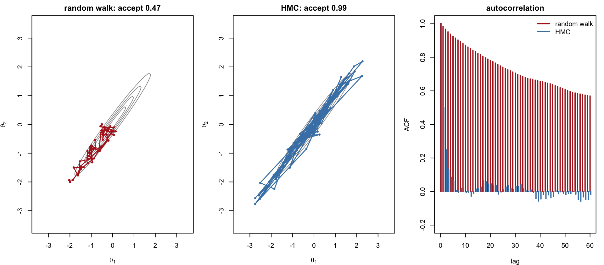
Chi Feng’s MCMC simulators let you tune the step size and number of leapfrog steps of Hamiltonian Monte Carlo, and compare it with other samplers, to see how they affect its exploration of a correlated target.
Every sampler above needed something derived by hand: Gibbs needed full conditionals worked out algebraically; Metropolis–Hastings needed only a target density but still needed step sizes tuned by trial and error; HMC needed an analytic gradient and needed \(\epsilon\) and \(L\) tuned by hand. Stan is a probabilistic programming language that automates all of this: given a model written declaratively (data, parameters, and a log-density), it computes gradients by automatic differentiation and runs an adaptive variant of HMC — the No-U-Turn Sampler (NUTS), which picks a good \(L\) on the fly by extending the leapfrog trajectory until it starts to double back — with step size tuned during a warm-up phase. The user never derives a conditional or a gradient.
The normal-mean/variance model of Examples 2 and 5 is simple enough that Gibbs sampling is not just possible but easy, so Stan’s advantage is not visible yet. Its real value shows up on models where hand-deriving conditionals or gradients would be a serious undertaking: hierarchical models with many levels of latent structure, time-series models with an unobserved latent state at every time point, or anything with a non-conjugate likelihood/prior combination. Example 8 gives a small taste of this: the Cauchy model needed a scale-mixture trick and three derivations for Gibbs sampling, but only its model statement in Stan.
To confirm Stan lands on the same posterior as the Gibbs and MH samplers of Examples 2 and 5, fit the identical normal-mean/variance model with the identical (vague) priors and data:
stan_normal_code <- "
data {
int<lower=0> n;
vector[n] x;
real mu0;
real<lower=0> sigma0;
real<lower=0> alpha;
real<lower=0> w;
}
parameters {
real mu;
real<lower=0> sigma2;
}
model {
mu ~ normal(mu0, sqrt(sigma0));
sigma2 ~ inv_gamma(alpha / 2, alpha * w / 2);
x ~ normal(mu, sqrt(sigma2));
}
"fit_stan <- stan(
model_code = stan_normal_code,
data = list(n = length(x), x = x, mu0 = 0, sigma0 = 1e10, alpha = 1e-5, w = 1e-5),
chains = 4, iter = 2000, warmup = 1000, seed = 5, refresh = 0
)stan_summary <- summary(fit_stan, pars = c("mu", "sigma2"))$summary
stan_sigma_draws <- sqrt(as.matrix(fit_stan, pars = "sigma2")[, 1])
three_way <- data.frame(
method = c("Gibbs", "Metropolis-Hastings", "Stan (NUTS)"),
mean_mu = c(mean(mu_g), mean(mh_long$mu[keep_mh]), stan_summary["mu", "mean"]),
sd_mu = c(sd(mu_g), sd(mh_long$mu[keep_mh]), stan_summary["mu", "sd"]),
mean_sigma = c(mean(sd_g), mean(mh_long$sd[keep_mh]), mean(stan_sigma_draws)),
sd_sigma = c(sd(sd_g), sd(mh_long$sd[keep_mh]), sd(stan_sigma_draws))
)
knitr::kable(three_way, digits = 3, align = c("l", "r", "r", "r", "r"))| method | mean_mu | sd_mu | mean_sigma | sd_sigma |
|---|---|---|---|---|
| Gibbs | 10.141 | 0.330 | 2.293 | 0.239 |
| Metropolis-Hastings | 10.141 | 0.325 | 2.298 | 0.236 |
| Stan (NUTS) | 10.132 | 0.326 | 2.295 | 0.245 |
The three completely independent implementations — hand-derived conditionals, a hand-tuned random walk, and Stan’s automatic NUTS — agree to within Monte Carlo noise, which is exactly the coherence check this book has used throughout: independent methods with no shared code path landing on the same answer is evidence that none of them is wrong.
Example 4 needed a page of algebra: a scale-mixture representation, an augmented posterior, and three full conditionals. In Stan none of that is needed. The model is written exactly as stated in Example 4, with the Cauchy likelihood used directly and no latent variances, and NUTS samples the two-dimensional posterior of \((\mu, \sigma^2)\) using gradients from automatic differentiation. The data and priors are those of Example 4: \(\mu \sim N(0, 10^2)\), \(\sigma^2 \sim \mathrm{IG}(1, 1)\) and the same 30 observations.
stan_cauchy_code <- "
data {
int<lower=0> n;
vector[n] y;
real mu0;
real<lower=0> tau;
real<lower=0> a0;
real<lower=0> b0;
}
parameters {
real mu;
real<lower=0> sigma2;
}
transformed parameters {
real<lower=0> sigma = sqrt(sigma2);
}
model {
mu ~ normal(mu0, tau);
sigma2 ~ inv_gamma(a0, b0);
y ~ cauchy(mu, sigma);
}
"fit_cauchy_stan <- stan(
model_code = stan_cauchy_code,
data = list(n = length(y_cauchy), y = y_cauchy, mu0 = 0, tau = 10, a0 = 1, b0 = 1),
chains = 4, iter = 2000, warmup = 1000, seed = 8, refresh = 0
)st_c <- as.matrix(fit_cauchy_stan, pars = c("mu", "sigma"))
knitr::kable(data.frame(
quantity = c("posterior mean of mu", "posterior sd of mu",
"posterior mean of sigma", "posterior sd of sigma"),
gibbs = c(mean(draws_cauchy[keep_c, "mu"]), sd(draws_cauchy[keep_c, "mu"]),
mean(draws_cauchy[keep_c, "sigma"]), sd(draws_cauchy[keep_c, "sigma"])),
stan = c(mean(st_c[, "mu"]), sd(st_c[, "mu"]), mean(st_c[, "sigma"]), sd(st_c[, "sigma"])),
exact = c(grid_mean(mu_grid, 1), grid_sd(mu_grid, 1),
grid_mean(sg_grid, 2), grid_sd(sg_grid, 2))
), digits = 3, col.names = c("quantity", "Gibbs (Example 4)", "Stan (NUTS)", "exact (grid)"),
align = c("l", "r", "r", "r"))| quantity | Gibbs (Example 4) | Stan (NUTS) | exact (grid) |
|---|---|---|---|
| posterior mean of mu | 2.228 | 2.234 | 2.228 |
| posterior sd of mu | 0.179 | 0.177 | 0.179 |
| posterior mean of sigma | 0.768 | 0.764 | 0.765 |
| posterior sd of sigma | 0.181 | 0.180 | 0.178 |
summary(fit_cauchy_stan, pars = c("mu", "sigma"))$summary[, c("mean", "sd", "n_eff", "Rhat")] mean sd n_eff Rhat
mu 2.2343723 0.1774277 2268.452 0.9999983
sigma 0.7638365 0.1799397 2618.336 1.0004121The three answers agree, and \(\hat R \approx 1\) with effective sample sizes in the thousands shows that the four chains have mixed. The comparison shows the trade-off between the two approaches. The Gibbs sampler of Example 4 needs no tuning and each iteration is cheap, but it needed the scale-mixture trick and three derivations. Stan needed only the model statement, and it would work unchanged with a different prior or a Student-\(t\) likelihood with any degrees of freedom, where the Gibbs derivation would have to be redone.
The problem. Binary responses \(y_1, \ldots, y_n\) depend on \(p\) candidate predictors through the logistic regression model \[ y_i \mid \alpha, \beta \sim \text{Bernoulli}\big(\text{logit}^{-1}(\alpha + x_i^\top \beta)\big), \qquad \text{logit}^{-1}(\eta) = \frac{1}{1 + e^{-\eta}}. \] Here there are \(p = 50\) predictors for only \(n = 100\) cases. The predictors are standard normal and only two carry signal: the true values are \(\alpha = 0\), \(\beta_1 = 1\), \(\beta_2 = -1\) and \(\beta_3 = \cdots = \beta_{50} = 0\).
Why maximum likelihood fails. With 51 unknowns and only 100 cases, it is very likely, and true for these data, that some linear combination \(\alpha + x_i^\top\beta\) is positive for every case with \(y_i = 1\) and negative for every case with \(y_i = 0\): the data are perfectly separable. Multiplying such a \(\beta\) by a larger and larger constant pushes every fitted probability towards its observed \(0\) or \(1\), so the likelihood keeps increasing and the MLE does not exist. glm stops after a fixed number of iterations with very large coefficients (here up to about \(60\) in absolute value) and warns that the algorithm did not converge and that fitted probabilities are numerically \(0\) or \(1\).
A sparse prior. A Bayesian fit always has a proper posterior, but the prior now matters a great deal. A vague prior such as \(\beta_j \sim N(0, 2.5^2)\) lets all 48 null coefficients wander, and their sum swamps the signal. We want a prior that says most coefficients are near 0, but a few may be large. The horseshoe prior does this with two levels of scale: \[
\beta_j = \tau\,\lambda_j\, z_j, \qquad z_j \sim N(0, 1), \qquad
\lambda_j \sim \text{Cauchy}^+(0, 1), \qquad \tau \sim \text{Cauchy}^+(0, 0.1),
\] where \(\text{Cauchy}^+\) is the Cauchy distribution restricted to positive values. The global scale \(\tau\) is small, so it shrinks every coefficient strongly towards \(0\). The local scale \(\lambda_j\) has a heavy tail, so a coefficient that the data support can take a large \(\lambda_j\) and escape the shrinkage. The intercept gets \(\alpha \sim N(0, 5^2)\). Writing \(\beta_j\) as a product with a standard normal \(z_j\) is the non-centred form used for Stan, and a smaller step size (adapt_delta = 0.995) helps NUTS handle the very different scales of \(\tau\) and the \(\lambda_j\), which otherwise cause many divergent transitions. If a handful remain, Stan reports them as a warning; with only a few out of 8,000 draws, \(\hat R\) near 1 and large effective sample sizes, they would not noticeably affect the summaries.
stan_logit_hs_code <- "
data {
int<lower=0> n;
int<lower=1> p;
matrix[n, p] X;
array[n] int<lower=0, upper=1> y;
}
parameters {
real alpha;
real<lower=0> tau; // global scale
vector<lower=0>[p] lambda; // local scales
vector[p] z;
}
transformed parameters {
vector[p] beta = tau * lambda .* z;
}
model {
alpha ~ normal(0, 5);
tau ~ cauchy(0, 0.1);
lambda ~ cauchy(0, 1);
z ~ std_normal();
y ~ bernoulli_logit(alpha + X * beta);
}
"
### the same model with a vague normal prior on every coefficient, for comparison
stan_logit_normal_code <- "
data {
int<lower=0> n;
int<lower=1> p;
matrix[n, p] X;
array[n] int<lower=0, upper=1> y;
}
parameters {
real alpha;
vector[p] beta;
}
model {
alpha ~ normal(0, 5);
beta ~ normal(0, 2.5);
y ~ bernoulli_logit(alpha + X * beta);
}
"set.seed(2024)
n_lr <- 100; p_lr <- 50
X_lr <- matrix(rnorm(n_lr * p_lr), n_lr, p_lr)
beta_true <- c(1, -1, rep(0, p_lr - 2))
y_lr <- rbinom(n_lr, 1, plogis(drop(X_lr %*% beta_true)))
data_lr <- list(n = n_lr, p = p_lr, X = X_lr, y = y_lr)
fit_logit <- stan(model_code = stan_logit_hs_code, data = data_lr,
chains = 4, iter = 3000, warmup = 1000, seed = 9, refresh = 0,
control = list(adapt_delta = 0.995))
fit_logit_normal <- stan(model_code = stan_logit_normal_code, data = data_lr,
chains = 4, iter = 2000, warmup = 1000, seed = 9, refresh = 0)Table 12.7 summarizes the horseshoe posterior of the first ten coefficients: the two signals and eight of the 48 nulls.
sm_logit <- summary(fit_logit, pars = sprintf("beta[%d]", 1:10))$summary
knitr::kable(data.frame(
coefficient = sprintf("beta[%d]", 1:10),
true = beta_true[1:10],
mean = sm_logit[, "mean"], sd = sm_logit[, "sd"],
q025 = sm_logit[, "2.5%"], q975 = sm_logit[, "97.5%"],
n_eff = round(sm_logit[, "n_eff"]), Rhat = sm_logit[, "Rhat"],
row.names = NULL),
digits = c(0, 0, 3, 3, 3, 3, 0, 3),
col.names = c("coefficient", "true", "mean", "sd", "2.5%", "97.5%", "n_eff", "Rhat"),
align = c("l", rep("r", 7)))| coefficient | true | mean | sd | 2.5% | 97.5% | n_eff | Rhat |
|---|---|---|---|---|---|---|---|
| beta[1] | 1 | 0.977 | 0.391 | 0.043 | 1.727 | 2713 | 1.001 |
| beta[2] | -1 | -1.215 | 0.372 | -1.983 | -0.521 | 5868 | 1.000 |
| beta[3] | 0 | -0.035 | 0.123 | -0.404 | 0.124 | 6675 | 1.001 |
| beta[4] | 0 | -0.036 | 0.119 | -0.386 | 0.118 | 7601 | 1.000 |
| beta[5] | 0 | 0.032 | 0.115 | -0.129 | 0.363 | 7517 | 1.000 |
| beta[6] | 0 | -0.023 | 0.101 | -0.302 | 0.129 | 6936 | 1.000 |
| beta[7] | 0 | 0.002 | 0.085 | -0.173 | 0.190 | 8124 | 1.001 |
| beta[8] | 0 | -0.037 | 0.121 | -0.404 | 0.112 | 7818 | 1.000 |
| beta[9] | 0 | -0.012 | 0.089 | -0.248 | 0.152 | 7483 | 1.000 |
| beta[10] | 0 | -0.009 | 0.087 | -0.227 | 0.156 | 7305 | 1.000 |
The null coefficients are shrunk tightly around \(0\), with posterior standard deviations near \(0.1\). The two signals escape the shrinkage: their posterior means are close to the true values \(1\) and \(-1\), and both 95% intervals exclude \(0\). Figure 12.11 shows the posterior draws of the two signals and two of the nulls.
draws_beta <- as.matrix(fit_logit, pars = "beta")
par(mfrow = c(2, 2), mar = c(4, 4, 2.5, 1))
for (j in 1:4) {
hist(draws_beta[, j], breaks = 60, freq = FALSE, col = "gray80", border = "white",
xlim = range(c(quantile(draws_beta[, j], c(0.001, 0.999)), 0, beta_true[j])),
main = bquote(beta[.(j)] ~ "(true value" ~ .(beta_true[j]) * ")"),
xlab = bquote(beta[.(j)]))
abline(v = beta_true[j], col = "firebrick", lwd = 2.5)
abline(v = 0, lty = 2)
}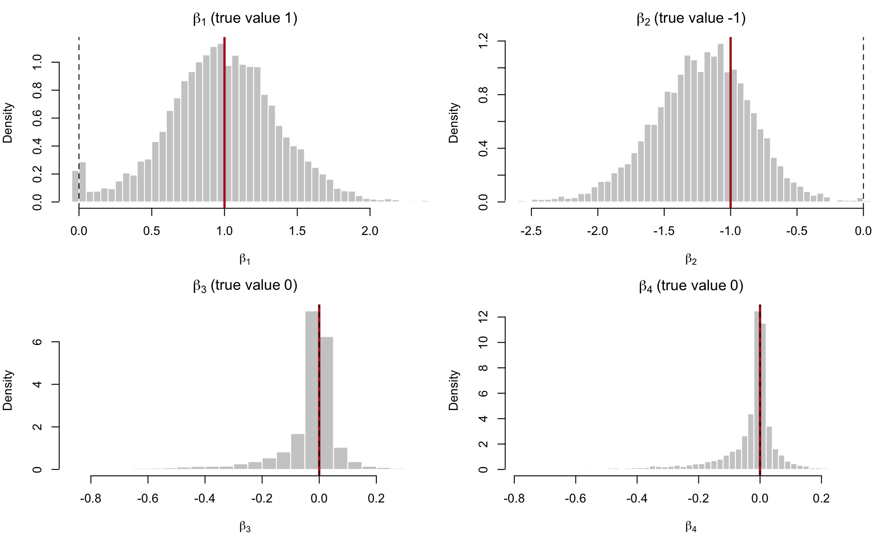
To see how well each method predicts, simulate a test set of \(m = 1000\) new cases from the same design, independently of the training data. For a test case with predictors \(\tilde x\), the posterior predictive probability averages the success probability over the posterior: \[
\begin{aligned}
P(\tilde y = 1 \mid \tilde x, \text{data})
& = \int \text{logit}^{-1}(\alpha + \tilde x^\top \beta)\, p(\alpha, \beta \mid \text{data})\, d(\alpha, \beta) \\
& \approx \frac1S \sum_{s=1}^S \text{logit}^{-1}\big(\alpha^{(s)} + \tilde x^\top \beta^{(s)}\big),
\end{aligned}
\] an average over the \(S\) posterior draws. No extra package (such as brms) is needed: the Stan draws and one matrix product give all \(m\) probabilities at once. We compare four sets of predicted probabilities \(\hat p_i\):
glm;Each is scored on the test responses in two ways:
set.seed(2025)
m_test <- 1000
X_test <- matrix(rnorm(m_test * p_lr), m_test, p_lr)
y_test <- rbinom(m_test, 1, plogis(drop(X_test %*% beta_true)))
### posterior predictive probabilities: average logit^{-1}(alpha + x beta) over the draws
post_pred <- function(fit) {
a <- as.matrix(fit, pars = "alpha")[, 1]
b <- as.matrix(fit, pars = "beta")
colMeans(plogis(sweep(b %*% t(X_test), 1, a, "+"))) # S x m, then average
}
p_hs <- post_pred(fit_logit)
p_normal <- post_pred(fit_logit_normal)
### maximum likelihood with glm: the data are separable, so glm warns and
### returns very large coefficients (and one NA); its plug-in probabilities
fit_glm <- suppressWarnings(glm(y ~ ., family = binomial, data = data.frame(y = y_lr, X_lr)))
p_glm <- suppressWarnings(predict(fit_glm, newdata = data.frame(X_test), type = "response"))
### the true probabilities, the best any method could do
p_true <- plogis(drop(X_test %*% beta_true))
### scores: test deviance -2 sum log P(y_i), error rate, confusion matrix
test_deviance <- function(p, y) -2 * sum(dbinom(y, 1, p, log = TRUE))
error_rate <- function(p, y) mean((p > 0.5) != y)
confusion <- function(p, y) table(predicted = factor(as.integer(p > 0.5), 0:1), actual = y)
methods <- list("Bayes, horseshoe prior" = p_hs, "Bayes, N(0, 2.5^2) prior" = p_normal,
"glm (MLE)" = p_glm, "true probabilities" = p_true)### one 2 x 2 matrix per method, placed side by side under a spanner with the method's name
conf_wide <- data.frame(predicted = c("predicted 0", "predicted 1"))
for (k in seq_along(methods)) {
cm <- confusion(methods[[k]], y_test)
conf_wide[[paste0("m", k, "_a0")]] <- cm[, "0"]
conf_wide[[paste0("m", k, "_a1")]] <- cm[, "1"]
}
tab_conf <- gt::gt(conf_wide, rowname_col = "predicted")
for (k in seq_along(methods)) {
tab_conf <- tab_conf |>
gt::tab_spanner(names(methods)[k], c(paste0("m", k, "_a0"), paste0("m", k, "_a1")))
}
tab_conf |> gt::cols_label(.list = setNames(
as.list(rep(c("actual 0", "actual 1"), length(methods))), names(conf_wide)[-1]))
Bayes, horseshoe prior
|
Bayes, N(0, 2.5^2) prior
|
glm (MLE)
|
true probabilities
|
|||||
|---|---|---|---|---|---|---|---|---|
| actual 0 | actual 1 | actual 0 | actual 1 | actual 0 | actual 1 | actual 0 | actual 1 | |
| predicted 0 | 369 | 180 | 330 | 222 | 299 | 225 | 337 | 134 |
| predicted 1 | 106 | 345 | 145 | 303 | 176 | 300 | 138 | 391 |
knitr::kable(data.frame(
method = names(methods),
deviance = sapply(methods, test_deviance, y = y_test),
error = sapply(methods, error_rate, y = y_test), row.names = NULL),
digits = c(0, 1, 3), col.names = c("method", "test deviance", "error rate"),
align = c("l", "r", "r"))| method | test deviance | error rate |
|---|---|---|
| Bayes, horseshoe prior | 1104.3 | 0.286 |
| Bayes, N(0, 2.5^2) prior | 2643.8 | 0.367 |
| glm (MLE) | 25472.5 | 0.401 |
| true probabilities | 1062.2 | 0.272 |
The comparison is very different from what one sees with few predictors. glm predicts badly: its error rate of 0.401 is far above the 0.272 of the true probabilities, and its test deviance of 25472 is about 18 times the \(1386.3\) of always predicting \(0.5\). Its fitted probabilities are almost all \(0\) or \(1\), so every wrong prediction costs a huge \(-2\log \hat P(\tilde y_i)\). A Bayesian fit is not automatically better: with the vague normal prior the test deviance, 2644, is also worse than the baseline. The horseshoe prior, which encodes the belief that only a few predictors matter, reduces the test deviance to 1104 and the error rate to 0.286, against 1062 and 0.272 for the true probabilities. When the number of predictors is a large fraction of the number of cases, the prior is not a detail to be made as vague as possible but the part of the model that makes good prediction possible.
This is the last of the sampling-methods chapters in the book: quadrature (Chapter 8) and Laplace’s method (Chapter 9) work in low dimension by grid or by a local Gaussian approximation; rejection and importance sampling (Chapters 10–11) draw independently from a fixed proposal; Gibbs, Metropolis–Hastings, HMC, and Stan (this chapter) let a Markov chain do the work instead, and are, in practice, how most modern Bayesian computation is actually done.